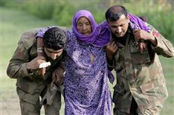

HEROS OF ZARB-E-AZB
Man At Their Best
MANAGEMENT OF DISPLACED CITIZENS

Management of Displaced citizens
MANAGEMENT OF DISPLACED CIVILIANS
As a result of the operation, 929,859 displaced civilians (from 80,302 families) were registered by Pakistani authorities as of 14 July.
Financial support, relief goods and food packages were being distributed and 59 donation points were established across Pakistan by the army.
On 10 July, the Foreign Office of Pakistan said that the rehabilitation of internally displaced persons was an internal matter and reiterated that Pakistan had not requested international assistance.
"We have very clear instructions from the prime minister [to not seek external assistance, Pakistan has neither made nor intends to make a request for international assistance.
It has been made very clear that all expenditure related to temporarily displaced Pakistanis will be met from our own resources",
Pakistani Foreign Office spokesperson Tasnim Aslam said.
However, it was reported that the United States allocated $31 million for IDPs and an additional $9.3 million for health, hygiene, water and sanitation for IDPs and livestock.
It was also reported that the United Arab Emirates government allocated $20.5 million in IDP humanitarian aid.
In February 2014, the Pakistani Finance Minister Ishaq Dar told a visiting US Senator Jack Reed that the cost of the operation so far had reached 40 billion (US$380 million) and could go as high as 130 billion (US$1.2 billion).
RETURN OF IDP'S
Operation Zarb-e-Azb, which began in June 2014 following the attack on the Karachi Airport, is continuing in North Waziristan Agency (NWA) as the military fights against terrorists and attempts to regain territory under their control.
The media has been allowed very limited coverage in NWA since the commencement of the operation and therefore, it is difficult to provide independent and verifiable information on the progress that has been made during the last six months.
The military has been conducting aerial strikes as well as ground operations, and it appears to be successful in acting against terrorists and their hideouts.
During the course of the operation, the military has discovered several tunnels, IED factories, recruitment centers run by militants, and a large quantity of arms and ammunition from the area. DG ISPR Maj Gen Asim Bajwa claims that 2,000 militants have been killed so far, and 200 soldiers have been martyred in the line of duty. Despite skepticism that surrounds the operation due to the country’s policy towards non-state actors in the past, DG ISPR maintains that the action is indiscriminate.
The US has acknowledged that groups such as the Haqqani network have suffered as a consequence of Operation Zarb-e-Azb. The reality of the situation will eventually become clear.
The ongoing operation has resulted in the displacement of more than a million people, who have found temporary accommodation in either state-run camps, rented houses or with relatives, mostly in Khyber-Pakhtunkhwa. Minister for States and Frontier Regions, Lt Gen (r) Abdul Qadir Baloch, claims that the repatriation of North Waziristan IDPs will begin by mid-February and will be carried out in different phases. Since the economy of the region was previously tied to militancy, the government plans to introduce new jobs and build infrastructure in FATA.
However, the government is yet to come forward and share its plan for rehabilitation of the IDPs and development in FATA. It would be in error to leave everything from reconstruction to resettlement of the IDPs to the military, which is doing its share of the work. The government would do well to secure a central role for itself in matters pertaining to FATA, which must include fresh legislation to govern the tribal region.
.png "Google")
.jpg "Youtube")

.jpg "Twitter")
All @ Copy Right Reserved 2018..